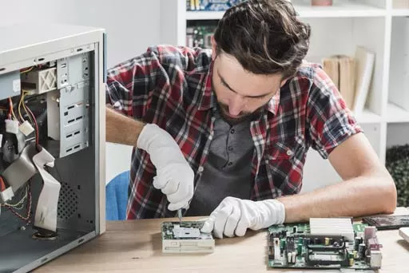

Servicios
- Instalación y configuración de componentes y periféricos.
- Eliminación de virus, troyanos, Spyware.
- Prevención de infecciones.
- Limpieza y mantenimiento de sistemas.
- Diagnóstico y detección de fallas.
- Instalación del sistema operativo y software de oficina.
- Realización e instalación de redes cableadas y wifi.
- Asesoramiento técnico.
- Soporte técnico a domicilio.
- Mantenimiento de sistemas operativos.
- Recuperación de los datos en disco rígido y otros medios de almacenamiento.
- Backups de datos al medio que desee.
- Reparacion de pc y notebook. Instalación de programas y todo el software que usted requiera.
